6주차: 제어문 (2) - 반복문과 이터레이터 🔄
컴퓨터의 가장 강력한 능력 중 하나는 지치지 않고 수백만 번 반복하는 것입니다. 이번 시간에는 파이썬의 반복문과 반복문의 내부 동작을 담당하는 이터레이터(Iterator)의 개념을 배웁니다.
학습목표
본 장에서는 주어진 집합 데이터를 처음부터 끝까지 순회하는 for 문의 기본적인 반복 제어 원리를 배웁니다.
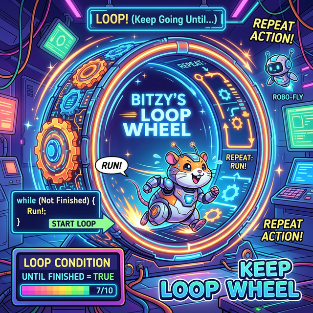
타 프로그래밍 언어들은 루프(Loop)를 매우 중요하게 취급합니다. 왜냐하면 반복 작업 처리에 반복문 이외의 대안이 거의 없기 때문입니다. 반면 파이썬은 리스트 내포(List Comprehension)와 패키지의 벡터화 연산(ex Numpy)을 통해 반복 작업을 보다 간결하게 치환하는 경우가 많습니다. 그럼에도 불구하고 핵심 제어 구조인 for 반복문은 흐름 명확성에 큰 이점이 있어 매우 기본적으로 알아야 합니다.
반복문 동작 흐름 (Mermaid)
반복문의 본질은 조건을 만족하는 동안 특정 블록의 코드를 끝없이 회전(Loop)시키는 것입니다. 아래 다이어그램은 반복문 기반 알고리즘의 전형적인 동작 흐름을 나타냅니다.
graph TD
A([Start Loop]) --> B{"반복 조건 평가<br/>(항목이 남았는가?)"}
B -- Yes --> C[반복 몸체 구문 실행]
C --> B
B -- No --> D([Exit Loop])
횟수와 구조 중심의 반복문 for
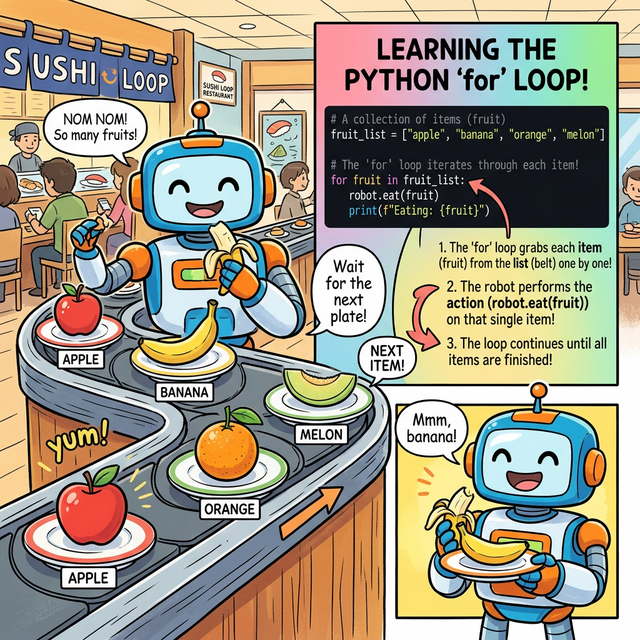
(웹툰 비유: 회전 초밥집 컨베이어 벨트 앞에 앉은 로봇입니다. 접시(데이터)가 하나씩 다가오면 로봇이 집어 먹고(처리하고), 다음 접시가 올 때까지 기다립니다. 벨트 위에 초밥이 남아 있는 한 이 과정은 계속 반복되며, 초밥이 동나면 식사(루프)가 종료됩니다.)for 구문은 in 이후의 리스트, 튜플, 문자열 등 항목이 있는 집합적 구조를 하나씩 처음부터 끝까지 순회합니다. for 마지막 콜론 :은 반드시 필요하며 탭(Tab) 들여쓰기로 블록을 생성해야 합니다.
(다이어그램: 컬렉션 바구니([A, B, C])에서 항목 하나가 튀어나와 변수 item에 담기고, 아래쪽 print 실행 블록으로 쏙 들어가 처리된 뒤 증발하는 과정을 순차적으로 반복하는 애니메이션입니다. 파이썬의 for문은 값을 일일이 세는 것이 아니라, “바구니에서 하나 꺼내기(Unpacking)”의 연속입니다.)
# 3.2.3 내장 range(1, 6)을 이용해 1부터 5까지 반복
for x in range(1, 6):
print(x)
모임형 자료형(리스트 안의 원소 등)을 직접 꺼낼 수도 있습니다.
fruits = ["apple", 2500, "banana", 500]
for item in fruits:
print(item)
[유용한 테크닉] f-string과 zip() 함수의 결합
데이터를 짝지어서 출력할 때 최신 파이썬의 꽃인 f-string 포매팅 기법(Python 3.6+)과 zip() 내장 함수를 묶어서 사용하면 매우 가독성이 높습니다.
- f-string: 중괄호
{}안에 변수나 표현식을 직접 삽입해 문자열을 동적으로 생성 - zip(): 여러 개의 객체를 병렬로 묶어 같은 인덱스끼리 튜플로 매칭
names = ["John", "Alice", "Bob"]
ages = [25, 30, 22]
# 서로 다른 두 리스트를 zip으로 묶어 병렬 반복 순회
for name, age in zip(names, ages):
# f"..." 형태로 간편하게 변수 삽입 문자열 출력
print(f"Name: {name}, Age: {age}살")
출력:
Name: John, Age: 25살
Name: Alice, Age: 30살
Name: Bob, Age: 22살
☕ Java vs 🐍 Python 스나이퍼 비교
1. for 문의 패러다임 변화 (Index vs Iteration)
- Java: 전통적인 자바의
for문은 인덱스(횟수)를 통제합니다.for (int i=0; i<arr.length; i++)처럼 변수를 선언하고, 조건식을 걸고, 증감시킵니다. - Python: 파이썬의
for구문은 자바의 향상된 for 문(Enhanced for loop)인for (Type item : arr)과 사실상 역할이 동일합니다. 횟수를 세는 구문이 아예 없고, “이 보따리(리스트)에 든 내용물을 처음부터 끝까지 하나씩 전부 꺼내!”라는 이터레이션(Iteration, 순회) 방식입니다. 만약 자바처럼 횟수가 필요하다면range()함수가 그 보따리를 대신 만들어주는 것입니다.
🎧 Vibe Coding
🗣️ 학생 프롬프트 (AI에게 이렇게 명령해 보세요): “파이썬
for문과zip()함수를 사용해서, 3명의 학생 이름과 수학 점수가 각각 담긴 두 개의 리스트를 순회하며 ‘{이름} 학생의 수학 점수는 {점수}점입니다’라는 문장을 예쁘게 출력해주는 간단한 코드를 짜줘. 데이터는 아무거나 넣어도 돼.”
코딩 영단어 학습 📝
for: ~를 위하여, ~하는 것에 대하여. (for item in list:는 “리스트 안에 있는 각각의 item을 집어올 때마다 반복하겠다”는 뉘앙스입니다.)Iteration: 반복, 순회. (리스트와 같이 여러 개가 들어있는 상자에서 하나씩 꺼내어 살펴보는 ‘행위 그 자체’를 뜻하는 핵심 프로그래밍 용어입니다.)
학습목표
본 장에서는 주어진 조건이 참(True)인 동안 끝없이 회전하는 while 문의 원리와, 무한 루프를 파괴하는 강력한 비상 정지 버튼 break의 활용법을 배웁니다. 아울러 중첩 반복문(Nested Loops) 구조를 시각적인 별 찍기 실습과 텍스트 RPG 전투 시스템으로 완벽히 마스터합니다.
조건 중심의 반복문 while
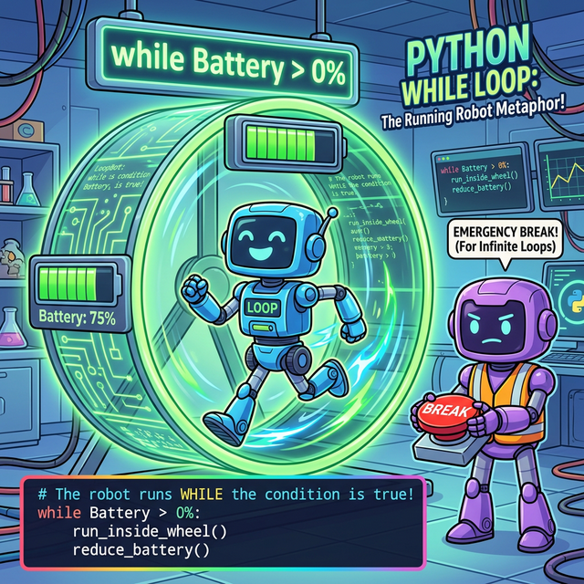
(웹툰 비유: 거대한 야광 쳇바퀴 안을 쉼 없이 달리는 로봇입니다. 쳇바퀴 위에는배터리 > 0%라는 간판이 빛나고 있습니다. 배터리가 조금이라도 남아있는 한(True) 로봇은 절대 멈추지 않고 달립니다. 쳇바퀴 밖에서는 혹시 모를 고장에 대비해 다른 로봇이 거대한 빨간색 비상정지 BREAK 버튼을 들고 땀을 쥐며 대기하고 있습니다.)
while 조건식: 블록 구문은 조건이 True인 동안은 영원히 블록을 반복 실행합니다.
 (다이어그램: 데이터 입자가
(다이어그램: 데이터 입자가 i <= 10이라는 조건 스캐너를 통과합니다. True 판정을 받으면 아래쪽 처리장(i += 1)으로 떨어져 처리된 뒤, 롤러코스터 트랙을 타고 다시 위쪽 스캐너로 수직 상승하여 무한 루프 쳇바퀴를 형성합니다. 만약 스캐너에서 False 판정을 받는 순간, 비로소 오른쪽 Exit 통로로 튕겨 나갑니다.)
i = 1
total = 0
# i가 10 이하일 때까지만 계속 반복
while i <= 10:
total += i
i += 1 # 이 증감식이 없으면 끝나지 않음 (무한 루프)
print(total) # 결과: 55
[유용한 테크닉] 무한 루프 탈출, break
만약 while의 조건식을 변수 없이 그냥 True로 강제 고정시켜버리면 이는 절대 스스로 끝나지 않는 무한 루프(Infinite Loop)가 됩니다. 이럴 땐 프로그램 내부에서 특정 종료 조건을 감지하여 break 명령어를 사용해 강제로 쳇바퀴를 깨부수고 탈출시킬 수 있습니다.
i = 0
while True: # 일단 영원히 반복!
i += 3
if i > 10:
break # 10을 초과하면 반복문을 강제로 파괴하고 종료함
print(i)
출력:
3
6
9
[종합 실습] 텍스트 RPG 전투 시스템 만들기
결론적으로 조건문(if), 반복문(for 또는 while), 그리고 자료구조(리스트)를 잘 버무리면 제법 복잡한 로직도 손쉽게 구현할 수 있습니다. 위에서 배운 개념들을 모두 활용해 간단한 전투 예제를 만들어 봅시다.
시나리오:
- 플레이어의 초기 체력은 100입니다.
- 몬스터 리스트의 몬스터를 순서대로 만납니다. (
for반복문) - 랜덤하게 공격 데미지를 입습니다.
- 중간에 체력이 0 이하가 되면
break로 전체 게임 오버 처리를 합니다.
import random # 랜덤 숫자를 뽑기 위한 모듈
player_hp = 100
monsters = ["Slime", "Wolf", "Dragon"]
print("⚔️ 모험을 시작합니다!")
for monster in monsters:
print(f"\n--- {monster}와의 전투 시작! ---")
# 10에서 50 사이의 랜덤 데미지 생성
damage = random.randint(10, 50)
player_hp -= damage
print(f"으악! {monster}에게 {damage}의 데미지를 입었습니다.")
# 체력 체크 통제 구문 (if ~ else)
if player_hp <= 0:
print(f"체력이 {player_hp}이 되었습니다.")
print("💀 Game Over... 눈앞이 캄캄해집니다.")
break # 반복문을 즉시 종료하고 빠져나갑니다.
else:
print(f"휴... 남은 체력: {player_hp}")
# 전체 전투 반복문이 정상적으로 끝난 뒤 생존 확인
if player_hp > 0:
print("\n🎉 축하합니다! 모든 몬스터를 물리치고 승리했습니다!")
정리
while 루프와 break 명령어는 파이썬 개발에 있어 절대 뺄 수 없는 핵심 논리 제어 구조입니다. 무한 루프 탈출을 통제하는 break를 명확히 이해하고, 이중 반복문의 톱니바퀴 구조를 별 찍기로 수련하면서 프로그래밍 사고력을 한층 깨우치시길 바랍니다.
☕ Java vs 🐍 Python 스나이퍼 비교
do ~ while 문의 부재 (파이썬만의 무한 루프 제어 철학)
- Java: 블록을 최소한 한 번은 무조건 실행하고 나서 나중에 조건을 검사하는
do { } while(조건);제어문이 따로 존재합니다. - Python: 파이썬에는 언어 스펙상
do ~ while구조가 아예 없습니다. 왜냐하면 “한 문법 규칙(while)으로 똑같은 일을 달성할 수 있다면 새로운 문법을 만들지 않는다”는 Pythonic 디자인 원칙 때문입니다. 파이썬에서는do ~ while과 똑같은 효과를 원한다면while True:로 무조건 열어두고 안에서 최초 실행 후if 조건: break로 탈출하는 명시적인 방식을 주로 사용합니다.
🎧 Vibe Coding
🗣️ 학생 프롬프트 (AI에게 이렇게 명령해 보세요): “파이썬
while문과random모듈을 이용해서, 1부터 100 사이의 숨겨진 숫자를 맞추는 ‘업다운(Up & Down) 스무고개 게임’ 코드를 짜줘. 내가 정답을 맞출 때까지 수없이 오답을 입력하더라도break를 만날 때까지 반복해서 물어보는 무한 루프 형태로 만들어줘.”
코딩 영단어 학습 📝
while: ~하는 동안. (논리적인 조건이 참으로 유지되는 ‘기간’을 중심으로 빙빙 도는 특징을 뜻합니다.)break: 깨다, 부수다, 멈추다. (무한히 돌고 있는 루프 사슬의 한가운데를 도끼로 쾅! 내리쳐 깨버리고 강제로 빠져나오는 아주 강력한 제동 명령어입니다.)
학습목표
본 장에서는 단일 차원의 제어를 넘어, 반복문 안에 또 다른 반복문을 중첩시키는 이중 반복문(Nested Loops)의 톱니바퀴 원리를 정확하게 시각적으로 이해합니다. 아울러 프로그래머들의 영원한 기초 수련법인 별 찍기(Star Patterns) 12선 알고리즘을 직접 돌려보며 2차원 공간 지각력을 극대화합니다.
이중 반복문 (Nested Loops)의 톱니바퀴 원리
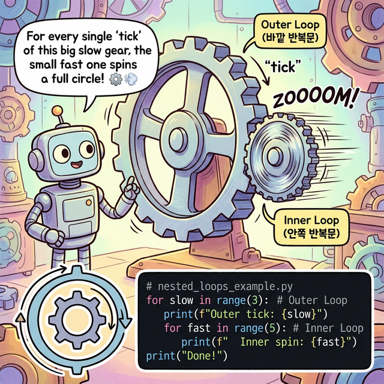
(웹툰 비유: 거대한 바깥쪽 톱니바퀴(Outer Loop) 안에 작고 미친 듯이 빨리 도는 안쪽 톱니바퀴(Inner Loop)가 맞물려 있습니다. 거대한 톱니바퀴가 딱 한 칸(1회) ‘딸깍’ 하고 움직일 때마다, 안쪽 톱니바퀴는 아예 한 바퀴 통째로(전체 반복) 미친 듯이 회전합니다. 이것이 바로 이중 반복문의 핵심 원리입니다!)반복문 안에 또 다른 반복문이 들어가는 구조를 이중 반복문(Nested Loops)이라고 부릅니다. 주로 2차원 매트릭스, 표 형태의 데이터, 화면 픽셀 매트릭스를 다룰 때 필수적으로 사용됩니다. 원리는 매우 직관적이고 강력합니다. 바깥쪽 루프가 1번 실행될 때마다, 안쪽 루프는 아예 새로 초기화되어 처음부터 끝까지 전체를 반복합니다.
# 구구단 2단, 3단 출력 예제
for i in range(2, 4): # 외부 루프: 2, 3 두 번 돎
print(f"--- {i}단 ---")
for j in range(1, 10): # 내부 루프: 외부가 1번 돌 때마다 1~9 전체를 다 돎
print(f"{i} x {j} = {i*j}")
2차원 공간 프로그래밍: 12가지 별 찍기 대방출
프로그래밍 논리 구조에서 이중 반복문의 원리를 가장 빠르고 확실하게 체득시켜 주는 최고의 훈련법은 단연 ‘별 찍기(Star Patterns)’입니다.
기억해야 할 핵심 기술은 print() 함수의 옵션 중 하나인 end="" 입니다. 이 옵션은 출력 후 강제로 다음 줄로 넘어가는 엔터(개행) 동작을 무시하고 옆으로 다닥다닥 붙여서 출력하게 만듭니다. 안쪽 톱니바퀴(내부 루프)가 돌며 수평으로 별을 긋고 나면, 바깥쪽 루프에서 빈 print()를 던져 가로줄을 완성하고 다음 줄로 넘어갑니다.
아래 12가지 패턴을 에디터에 직접 복사하거나 타이핑해가며 톱니바퀴가 어떻게 돌아가는지 눈으로 확인해 보세요!
1. 정사각형 (Square)
가장 기본이 되는 N x N 사이즈 출력입니다.
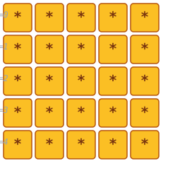
size = 5
for i in range(size):
for j in range(size):
print("*", end="")
print() # 한 줄(안쪽 루프 5회)이 끝나면 줄바꿈 처리!
2. 직각 삼각형 (Left-aligned Right Triangle)
행수(i)가 늘어날 때마다 찍는 별의 개수(j)도 순차적으로 늘어납니다.
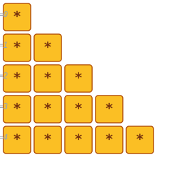
size = 5
for i in range(1, size + 1):
for j in range(i): # j는 i까지만 돕니다.
print("*", end="")
print()
3. 역직각 삼각형 (Inverted Left-aligned Right Triangle)
다섯 개부터 시작해서 밑으로 내려갈수록 줄어듭니다.
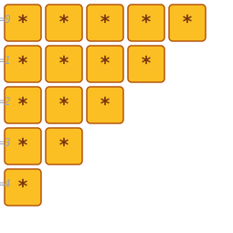
size = 5
for i in range(size, 0, -1):
for j in range(i):
print("*", end="")
print()
4. 우측 정렬 직각 삼각형 (Right-aligned Right Triangle)
별표 앞에 빈 공백(Space)을 의도적으로 채워 넣어 우측 끝으로 별을 밀어냅니다.
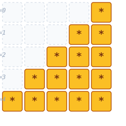
size = 5
for i in range(1, size + 1):
for j in range(size - i):
print(" ", end="") # 허공인 공백 문자 먼저 출력
for j in range(i):
print("*", end="") # 그다음 진짜 별 출력
print()
5. 우측 정렬 역직각 삼각형 (Inverted Right-aligned Right Triangle)
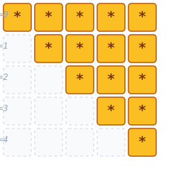
size = 5
for i in range(size, 0, -1):
for j in range(size - i):
print(" ", end="")
for j in range(i):
print("*", end="")
print()
6. 정삼각형 (Pyramid)
공백으로 한가운데로 밀어 넣고, 한 줄을 넘어갈 때마다 별 1개씩이 아니라 2 * i - 1 공식을 이용해 홀수 단위(1 $\to$ 3 $\to$ 5)로 퍼져나가게 만듭니다. 가장 중요한 공식입니다!
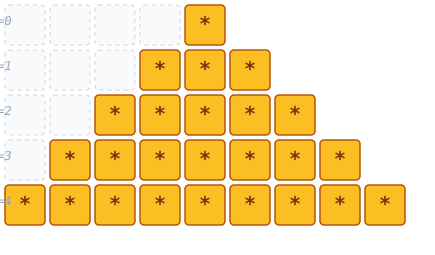
size = 5
for i in range(1, size + 1):
for j in range(size - i):
print(" ", end="")
for j in range(2 * i - 1): # 별의 개수는 홀수로 확산
print("*", end="")
print()
7. 역정삼각형 (Inverted Pyramid)
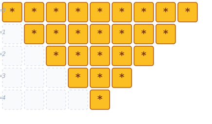
size = 5
for i in range(size, 0, -1):
for j in range(size - i):
print(" ", end="")
for j in range(2 * i - 1):
print("*", end="")
print()
8. 다이아몬드 (Diamond)
위쪽을 찍는 정삼각형 코드 블록을 실행하고, 밑으로 꺾여 들어가는 역정삼각형 코드 블록을 연달아 이어 붙이면 아름다운 다이아몬드가 됩니다.
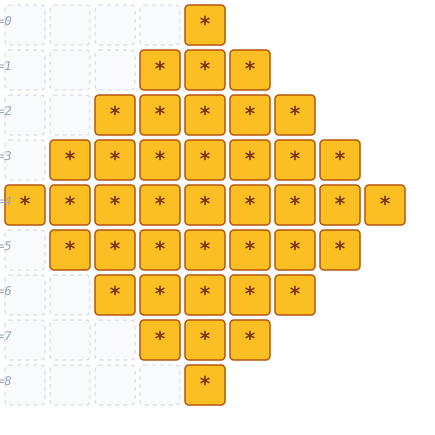
size = 5
# 위쪽 정삼각형
for i in range(1, size + 1):
for j in range(size - i):
print(" ", end="")
for j in range(2 * i - 1):
print("*", end="")
print()
# 아래쪽 역정삼각형 (가장 두꺼운 윗줄과 사이즈가 동일하면 중복되므로 -1 부터 시작)
for i in range(size - 1, 0, -1):
for j in range(size - i):
print(" ", end="")
for j in range(2 * i - 1):
print("*", end="")
print()
9. 모래시계 (Hourglass)
역정삼각형 코드를 먼저 쏘고 그 아래 정삼각형을 쏘되, 만나는 모서리 꼭짓점이 중복되지 않도록 방어하는 것이 포인트입니다.
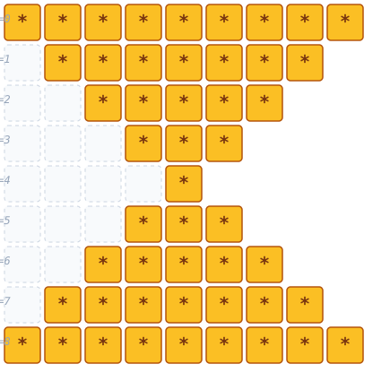
size = 5
# 윗부분 (역삼각 깔때기)
for i in range(size, 0, -1):
for j in range(size - i):
print(" ", end="")
for j in range(2 * i - 1):
print("*", end="")
print()
# 아랫부분 (삼각, 윗부분 꼭짓점 중복 제외 위해 2부터 시작)
for i in range(2, size + 1):
for j in range(size - i):
print(" ", end="")
for j in range(2 * i - 1):
print("*", end="")
print()
10. 테두리만 있는 정사각형 (Hollow Square)
정사각형과 똑같이 돌되, 중간에 if 문을 걸어 안쪽 칸일 경우 별 대신 우주 공간처럼 틈새 공백 문자를 발사합니다.
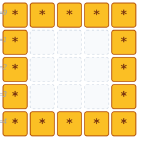
size = 5
for i in range(size):
for j in range(size):
# 첫 줄이거나, 마지막 줄이거나, 맨 앞이거나, 맨 끝일 때만 별 도장!
if i == 0 or i == size - 1 or j == 0 or j == size - 1:
print("*", end="")
else:
print(" ", end="") # 내부 속 공간
print()
11. 나비 모양 (Butterfly)
왼쪽 날개(삼각형 모양)를 쏘고 공간을 비운 뒤 오른쪽 날개(역방향 삼각형을 대칭 거울)를 결합합니다.
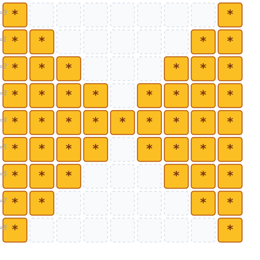
size = 5
# 위쪽 전개 날개
for i in range(1, size + 1):
for j in range(i):
print("*", end="")
for j in range(2 * (size - i)):
print(" ", end="")
for j in range(i):
print("*", end="")
print()
# 아래쪽 좁혀지는 날개
for i in range(size - 1, 0, -1):
for j in range(i):
print("*", end="")
for j in range(2 * (size - i)):
print(" ", end="")
for j in range(i):
print("*", end="")
print()
12. 평행사변형 (Parallelogram)
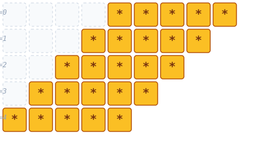
size = 5
for i in range(1, size + 1):
for j in range(size - i): # 아래 행렬로 갈수록 공백 개수를 점진적으로 갉아먹음
print(" ", end="")
for j in range(size): # 별의 총개수는 무조건 유지
print("*", end="")
print()
🎧 Vibe Coding
🗣️ 학생 프롬프트 (AI에게 이렇게 명령해 보세요): “내가 파이썬 이중 반복문을 공부하고 있는데,
if,else분기 처리가 정확히 픽셀 단위로 어떻게 되었는지 상세히 주석 달아줘.”
✍️ 이번 주 연습 문제
문제 1. while 루프를 사용하여 1부터 100까지의 자연수 중 3의 배수들의 합계를 구하는 프로그램을 작성해 보세요.
문제 2. 구구단 전체(2단부터 9단까지)를 이중 for 루프를 사용하여 아래 형식처럼 예쁘게 출력하는 프로그램을 작성해 보세요.
(예: 2 x 1 = 2, 2 x 2 = 4, …)
문제 3. (심화) for 루프와 range()를 응용하여, 사용자로부터 자연수 $N$을 입력받아 다음과 같은 높이 $N$의 피라미드를 출력하는 프로그램을 작성해 보세요.
(예: $N=3$일 때)
*
***
*****
📖 교재 상세 학습: 57 리스트 컴프리헨션: 한 줄로 끝내는 리스트 만들기
57 리스트 컴프리헨션: 한 줄로 끝내는 리스트 만들기
수학 시간에 배운 ‘조건제시법’과 똑같습니다. “이러이러한 조건을 만족하는 원소들을 모아서 집합으로 만들어라”라는 명령을 파이썬 코드로 그대로 번역한 것입니다.
목표: 1부터 5까지 숫자를 각각 3배 곱한 리스트 만들기
코드: 초보자의 방식 (for문)
result = []
for i in range(1, 6):
result.append(i * 3)
print(result) # [3, 6, 9, 12, 15]
초보자 시절에는 이렇게 세 줄이 필요했습니다. 하지만 컴프리헨션을 쓰면 대괄호 [] 안에서 모든 작업이 끝납니다.
코드: 고수의 방식 (컴프리헨션)
# [넣을_값 for 변수 in 반복_가능한_데이터]
result = [i * 3 for i in range(1, 6)]
print(result) # [3, 6, 9, 12, 15]
if문까지 한 줄에 구겨 넣기!
이번엔 1부터 10까지 숫자 중에서 짝수만 골라서 제곱해 보겠습니다.
# [넣을_값 for 변수 in 데이터 if 조건]
even_squares = [x**2 for x in range(1, 11) if x % 2 == 0]
print(even_squares) # [4, 16, 36, 64, 100]
어떤가요? 이 코드는 다른 프로그래밍 언어 사용자들의 부러움을 한 몸에 받는 파이썬만의 아름다운 문법입니다.
💻 실습: 리스트 컴프리헨션 마스터하기
문제 1부터 20까지의 숫자 중에서 5의 배수인 숫자들만 그대로 모아서 my_list라는 리스트로 만드는 코드를 컴프리헨션으로 작성해 보세요.
정답 확인하기
**해답** ```python my_list = [i for i in range(1, 21) if i % 5 == 0] ```앞 장에서 대괄호 []를 활용해 리스트를 예술적으로 빚어냈던 것처럼, 딕셔너리 역시 중괄호 {} 양식을 쓰면 단 한 문장만으로도 키(Key)와 값(Value)이 짝지어진 완벽한 사전을 뚝딱 생성해 낼 수 있습니다.
떨어져 있는 두 개의 별개 리스트를 가져와 딕셔너리로 본드 칠할 때, 파이썬 생태계 최고의 찰떡궁합인 zip() 함수를 버무려 쓰면 극상의 효율이 나옵니다. zip() 함수는 아우터의 지퍼를 쫙 올리듯, 두 리스트에서 똑같은 위치(인덱스)에 서 있는 원소끼리 손을 꼭 잡게 엮어 주는 역할을 합니다.
목표: ‘상품명 리스트’와 ‘단가 리스트’를 엮어 ‘{상품명: 단가}’ 형식의 영수증 딕셔너리 만들기
코드: 딕셔너리 컴프리헨션과 zip()의 극적인 콜라보레이션
items = ["아이폰", "갤럭시", "픽셀"]
prices = [120, 100, 80]
# {내가_정할_키: 내가_정할_값 for 키용_변수, 값용_변수 in zip(좌측리스트, 우측리스트)}
store_catalog = {product: cost for product, cost in zip(items, prices)}
print(store_catalog)
# {'아이폰': 120, '갤럭시': 100, '픽셀': 80}
때로는 이전에 다뤘던 enumerate() 함수와 콜라보하여, 데이터의 멱살을 잡고 차례차례 기호 순번을 매겨주는 넘버링 딕셔너리도 손쉽게 짤 수 있습니다.
members = ["제시카", "티파니", "태연"]
# {내가_정할_키: 내가_정할_값 for 순번_변수, 값_변수 in enumerate(데이터더미)}
# i는 0부터 돌기 때문에 사람이 보기 편하도록 i+1을 조미료로 뿌려줍니다!
roll_book = {f"참가자{i+1}": person for i, person in enumerate(members)}
print(roll_book)
# {'참가자1': '제시카', '참가자2': '티파니', '참가자3': '태연'}
이 압축적인 컴프리헨션 문법이야말로 코드를 ‘가장 파이썬스럽게(Pythonic)’ 칠해주는 마법의 붓끝입니다. 낯선 모양새라 처음엔 어질어질하겠지만, 손에 익는 순간 지루한 for문 로직을 타자 몇 번으로 찍어누르는 쾌감을 맛보게 될 것입니다!
💻 미니 실습: 딕셔너리 지퍼 합체 마술
Quiz 1 동떨어진 두 개의 리스트, headers = ["분류", "재질", "색상"] 와 details = ["상의", "면", "블랙"] 이 있습니다. 컴프리헨션 문법과 zip() 도구를 영리하게 섞어서 이 둘을 product_info라는 단 하나의 딕셔너리로 깨끗하게 병합해 보세요.
모범 답안 보기
**풀이 1** ```python headers = ["분류", "재질", "색상"] details = ["상의", "면", "블랙"] product_info = {h: d for h, d in zip(headers, details)} ```📖 교재 상세 학습: 59 세트 컴프리헨션: 중복 데이터 제거 마술
59 세트 컴프리헨션: 중복을 허락하지 않는 집합 생성기
이전 시간에 리스트와 딕셔너리를 한 줄로 우아하게 만들어내는 파이썬의 핵심 문법, 컴프리헨션(Comprehension)을 배웠습니다. 파이썬은 여기서 멈추지 않고, 동일한 값을 절대로 중복해서 가지지 않는 ‘집합(Set)’ 자료형에도 지능형 생성 문법을 적용할 수 있도록 허용합니다.
지능형 딕셔너리처럼 중괄호 {}를 사용하지만, 콜론(:) 형식의 Key: Value 쌍이 아니라 요소 1개만 덩그러니 반환하도록 명시하면 파이썬 호스트는 눈치껏 이를 ‘지능형 집합(Set Comprehension)’으로 인식합니다.
1. 중복된 원소 깔끔하게 걸러내기
만약 수많은 데이터가 들어있는 리스트에서 어떤 수식을 적용하되, 결과값 중 겹치는 것들은 알아서 제거하고 싶다면 어떻게 해야 할까요? 세트 컴프리헨션을 쓰면 너무나도 쉽게 해결됩니다.
예제 코드: 절댓값을 구해서 중복 없이 모으기
raw_data = [1, -1, 2, -2, 3, -3]
# 절댓값 함수(abs)를 씌워서 중괄호 안에 쏟아 넣습니다.
unique_absolutes = {abs(x) for x in raw_data}
print(unique_absolutes)
# {1, 2, 3} (1과 -1의 절댓값 1이 겹치므로 하나만 남고 자동으로 제거됨)
2. 문자열 고유 알파벳 추출하기
어떤 단어가 주어졌을 때, 해당 알파벳을 모조리 수집하되 중복되는 글자를 빼버리는 로직도 단 한 줄이면 족합니다.
word = "banana"
# 문자열도 하나씩 순회할 수 있는 '반복 가능한' 데이터입니다!
unique_chars = {char for char in word}
print(unique_chars)
# {'a', 'b', 'n'} (순서는 집합 특성상 무작위로 출력될 수 있음)
이 압축적인 컴프리헨션 문법은 수많은 데이터를 정제하고 걸러내는 데이터 분석이나 알고리즘 로직에서 진가를 발휘합니다.
리스트 [], 딕셔너리 {}, 세트 {} 각각의 지능형 마법을 손에 익히고 나면, 왜 수많은 전 세계의 개발자들이 파이썬을 사랑하는지 뼛속 깊이 깨닫게 될 것입니다!
📖 교재 상세 학습: 62 마르지 않는 샘물: 반복형(Iterable)과 반복자(Iterator)
62 마르지 않는 샘물: 반복형(Iterable)과 반복자(Iterator)
파이썬에서 for 문을 돌릴 수 있는 리스트, 튜플, 문자열 같은 데이터 꾸러미들을 우리는 반복형(Iterable)이라고 부릅니다. 하지만 이 꾸러미들 자체가 데이터를 하나씩 ‘알아서’ 뱉어내는 능력까지 가진 것은 아닙니다. 꾸러미 안에서 데이터를 하나씩 쏙쏙 꺼내주는 반복자(Iterator)라는 별도의 뽑기 기계를 거쳐야만 합니다.
1. iter()와 next()의 콤비 플레이
- 반복형(Iterable): 원소들을 품고 있는 상자. 내부에
__iter__라는 특수한 마법 메서드가 구현되어 있습니다. - 반복자(Iterator): 상자에 관을 꽂아 하나씩 뽑아내는 기계. 내부에
__next__라는 마법 단어가 구현되어 있습니다.
iter() 함수 상자에 반복형을 집어넣으면 반복자 기계가 되어 나옵니다. 이 기계에 next() 버튼을 누를 때마다 뱃속의 항목이 하나씩 세상 밖으로 튀어나옵니다.
# 문자열은 반복형(Iterable) 상자입니다.
my_str = "Hi!"
# iter()를 써서 하나씩 뽑아내는 기계(Iterator)로 변신시킵니다.
my_iterator = iter(my_str)
# next()를 누를 때마다 하나씩 튀어나옵니다!
print(next(my_iterator)) # 'H'
print(next(my_iterator)) # 'i'
print(next(my_iterator)) # '!'
더 이상 뽑을 게 없는데 계속 next()를 누르면 파이썬 엔진은 StopIteration 이라는 경고음을 내며 기계를 멈춥니다.
(for 문은 사실 우리가 모르는 뒤편에서 몰래 이 StopIteration 에러가 날 때까지 무한정 next() 버튼을 광클해주는 아주 고마운 녀석이었습니다!)
[!WARNING] 반복자 기계는 데이터를 한 번 다 뽑아내면 수명이 완전히 끝납니다(소진됨). 다시 처음부터 뽑고 싶다면 텅 빈 기계를 누를 게 아니라,
iter()를 써서 기계를 새로 다시 만들어야 합니다.
2. 내 손으로 뚝딱! 나만의 반복자 기계 만들기
우리가 직접 만든 클래스도 특정 규칙(__iter__ 와 __next__ 구현)만 완벽히 지키면, 파이썬이 인정해 주는 내장 반복자가 될 수 있습니다.
class MyCounter:
def __init__(self, limit):
self.limit = limit
self.current = 1
# "나 반복형이야!" 하고 선언하는 부분 (기계 자기 자신을 그대로 리턴)
def __iter__(self):
return self
# next()가 불릴 때마다 어떻게 숫자를 뱉어낼지 정해줍니다.
def __next__(self):
if self.current <= self.limit:
value = self.current
self.current += 1
return value
else:
# 한계치에 도달하면 뽑기를 멈추는 에러를 뿜어냄!
raise StopIteration
# 딱 3까지만 연속해서 나오는 뚝딱 카운터 기계 생성!
counter_machine = MyCounter(3)
print("첫 번째:", next(counter_machine)) # 1
print("두 번째:", next(counter_machine)) # 2
print("세 번째:", next(counter_machine)) # 3
# print(next(counter_machine)) # 여기서 숨겨진 StopIteration 에러 발생!
이렇게 원할 때마다 필요한 데이터를 그 자리에서(즉석에서) 딱 한 개씩 만들어주기 때문에, 노트북의 뇌 용량(메모리)을 아주아주 조금만 쓰면서도 무한대에 가까운 데이터를 에러 없이 쉽게 처리할 수 있는 강력한 설계 패턴이 됩니다.
📖 교재 상세 학습: 63 마법의 순환 도구 상자: itertools 모듈
63 데이터 조립의 신: 마법의 순환 도구 상자 (itertools)
파이썬 창조주가 태초부터 만들어둔 기본 창고에는, 수많은 반복자(Iterator)들을 마치 찰흙이나 레고 블록처럼 이리저리 뭉치고 떼어내어 완전히 새로운 데이터 흐름을 만들어내는 초강력 마법 도구 상자가 있습니다. 바로 itertools (아이터 툴즈) 모듈입니다.
이 도구들도 모조리 결과를 반복자 형태로만 돌려주기 때문에 (한꺼번에 리스트를 만들지 않음) 아무리 거대한 데이터를 집어넣어도 메모리가 폭발하지 않아 대규모 데이터 집계에 안성맞춤입니다.
1. 차곡차곡 데이터 쌓고 엮기
accumulate(눈덩이 계산기): 들어오는 값들을 계속 누적해서 더해주는 무서운 눈덩이 기계입니다.chain(사슬 묶기): 생판 다른 두 개 이상의 리스트나 문자열을 하나의 거대한 밧줄로 길게 묶어줍니다.
import itertools
# 1. 눈덩이 굴리기 (누적 합산)
numbers = [1, 2, 3, 4]
# 눈으로 결과물을 확인하기 위해 억지로 list()로 포장해줍니다.
acc_iter = itertools.accumulate(numbers)
print(list(acc_iter)) # [1, 3, 6, 10] (과정: 1, 1+2, 1+2+3, 1+2+3+4)
# 2. 다른 종족 리스트 이어 붙이기
list_a = [1, 2]
list_b = ["A", "B"]
chained_iter = itertools.chain(list_a, list_b)
print(list(chained_iter)) # [1, 2, 'A', 'B'] 무심하게 한 줄로 이어버림!
2. 모든 사건의 배후: 경우의 수 마스터 (순열과 조합)
카드 게임에서 내가 어떤 카드 패를 뽑을지 확률을 계산하거나, 자물쇠 번호의 모든 경우의 수를 부술 때 아주 유용한 도구들입니다.
product(카테시안 곱): 여러 주머니에서 각각 공을 1개씩 꺼내 만들 수 있는 모든 ‘짝꿍’을 만듭니다.permutations(순열): 순서를 따져서 가능한 모든 줄 세우기 포지션을 만듭니다.combinations(조합): 순서에 상관없이 그냥 뽑아온 조편성 경우의 수만 구합니다.
import itertools
heroes = ["IronMan", "Thor", "Hulk"]
# 3명 중 2명을 뽑아서 '어떤 순서'로 공격을 보낼지? (순열)
perm = itertools.permutations(heroes, 2)
print("■ 공격조 (순서 중요):", list(perm))
# [('IronMan', 'Thor'), ('IronMan', 'Hulk'), ('Thor', 'IronMan'),
# ('Thor', 'Hulk'), ('Hulk', 'IronMan'), ('Hulk', 'Thor')]
# 3명 중 2명을 그냥 같은 '한 팀'으로 편성하기 (조합 - 순서 무관)
comb = itertools.combinations(heroes, 2)
print("■ 한 팀 (순서 무관):", list(comb))
# [('IronMan', 'Thor'), ('IronMan', 'Hulk'), ('Thor', 'Hulk')]
3. 폭주 기관차 멈추기! (무한 반복 컨트롤러)
때로는 cycle(무한 반복)이나 count(무한 숫자 세기)처럼 끝없이 데이터를 찍어내는 브레이크 고장 난 폭주 기관차 반복자를 만들어야 할 때가 있습니다. 이런 기관차를 적절하게 썰어버리는 훌륭한 안전 장치도 세트로 존재합니다.
takewhile(조건이 맞을 때까지만 살리기): 조건이 참(True)일 때까지만 문을 열어두고, 단 한 번이라도 거짓이 들어오면 가차 없이 셔터를 닫아 기계를 멈춥니다.dropwhile(조건이 거짓일 때부터 다 살리기): 조건이 참이면 데이터를 쿨하게 쓰레기통에 버리다가, 거짓이 되는 순간부터 정신을 차리고 끝까지 모든 데이터를 쏟아냅니다.
import itertools
# 1부터 0.5 간격으로 평생 무한히 숫자 세기 (1, 1.5, 2.0, 2.5, 3.0 ...)
무한숫자 = itertools.count(1, 0.5)
# 값이 3보다 작을 때까지만 문을 열어놔라!
안전한숫자 = itertools.takewhile(lambda x: x < 3, 무한숫자)
# 안전하게 멈추기 때문에 list()로 묶어도 컴퓨터가 터지지 않아요!
print("수집 요원:", list(안전한숫자)) # [1.0, 1.5, 2.0, 2.5]
이 밖에도 리스트의 일부분만 슬라이스 해주는 islice, 중복된 값을 그룹으로 에쁘게 묶어주는 groupby 등, itertools는 장인이 될수록 코드를 마법처럼 짧고 빠르게 만들어주는 파이썬 최고의 무기입니다.
📖 교재 상세 학습: 64 게으른 데이터 공장: 제너레이터(Generator)와 yield
64 가장 게으르고 똑똑한 데이터 공장: 제너레이터(Generator)
앞선 장에서 클래스에 __iter__ 와 __next__ 를 직접 만들어서 멋진 맞춤형 반복자(Iterator)를 만들 수 있다고 배웠습니다. 하지만 매번 클래스를 짜려니 코드가 너무 길어지고 복잡해집니다.
파이썬은 이를 아주 세련되고 간단하게 만들 수 있는 마법의 문법을 제공합니다. 바로 제너레이터(Generator) 입니다.
제너레이터는 작동 방식이 아주 “게으릅니다(Lazy)”. 누가 달라고 조르기 전(next()를 부르기 전)에는 땀 흘려 일하지 않고 가만히 대기합니다. 이 철저한 게으름 덕분에 메모리를 엄청나게 아낄 수 있습니다!
1. return 대신 양보하는 yield
보통의 파이썬 함수는 return을 만나면 결과값을 딱 뱉어내고 아예 생을 마감해버립니다(종료).
하지만 제너레이터 함수는 yield(양보하다, 산출하다)라는 특별한 키워드를 사용합니다. yield를 만나면 데이터를 밖으로 뱉어내긴 하지만, 함수가 죽지 않고 현재 상태 그대로 “작업 일시 정지(Pause)” 상태에 들어갑니다!
def my_lazy_factory():
print("[시스템] 첫 번째 공정 작동합니다...")
yield "아이템 1호"
print("[시스템] 두 번째 공정 작동합니다...")
yield "아이템 2호"
print("[시스템] 마지막 공정 작동합니다...")
yield "아이템 3호"
# 공정 기계를 만듭니다 (이때는 함수 내부 코드가 단 한 줄도 실행되지 않습니다!)
factory_machine = my_lazy_factory()
# 밖에서 next() 버튼을 눌러야 비로소 기계가 돌아갑니다!
print(next(factory_machine))
# 출력: [시스템] 첫 번째 공정 작동합니다...
# 결과: "아이템 1호"
# (그리고 함수는 여기서 일.시.정.지! 퇴근하지 않고 기다립니다)
print(next(factory_machine))
# 일시 정지된 위치부터 다시 출발!
# 출력: [시스템] 두 번째 공정 작동합니다...
# 결과: "아이템 2호"
이렇게 함수 코드를 끝까지 다 실행하지 않고 중간중간 멈출 수 있기 때문에, 1억 개의 연산 결과도 리스트에 다 담지 않고 즉석에서 하나씩 만들어 내보낼 수 있습니다.
2. 1줄로 끝내는 제너레이터 표현식 (GenExpr)
우리가 리스트를 한 줄로 예쁘게 만들 때 쓰던 ‘지능형 리스트(리스트 컴프리헨션)’ 문법을 기억하시나요? 거기서 꺾쇠 기호 [] 대신 소괄호 ()를 쓰면 그 즉시 세련된 1줄짜리 제너레이터 기계가 완성됩니다.
# 보통의 지능형 리스트
# (메모리 쾅! 백만 개의 제곱수를 램(RAM)에 다 만들어서 쑤셔 넣음)
squares_list = [x*x for x in range(1000000)]
# 제너레이터 표현식
# (메모리 세이브! 만드는 '규칙'만 기억하고 대기)
squares_gen = (x*x for x in range(1000000))
print(squares_gen) # 결과 값 대신 <generator object> 기계 자체가 나옴
print("첫 뽑기:", next(squares_gen)) # 첫 뽑기: 0
print("두 뽑기:", next(squares_gen)) # 두 뽑기: 1
3. 대규모 하도급 계약 발주! (yield from)
제너레이터를 엮어서 거대한 파이프라인을 만들다 보면, 내가 만든 제너레이터가 ‘다른 제너레이터’의 값들을 쭉 대신 뽑아와서 밖으로 연달아 뱉어줘야 할 때가 있습니다. 이럴 땐 골치 아프게 for 루프를 돌릴 필요 없이, yield from 이라는 키워드 하나면 파이프라인이 레고블록처럼 찰칵 연결됩니다.
def small_factory():
yield "나사못"
yield "톱니바퀴"
def big_factory():
yield "조립 전..."
# small_factory에 하도급을 맡겨서 나오는 걸 내가 다 뽑아서 줍니다!
yield from small_factory()
yield "조립 완료!"
# 완성된 거대 파이파라인 가동
bf = big_factory()
for item in bf:
print(item)
# [출력 결과]
# 조립 전...
# 나사못
# 톱니바퀴
# 조립 완료!
이렇게 제너레이터를 줄줄이 소시지처럼 엮으면, 아주 크고 복잡한 빅데이터 가공 파이프라인도 손쉽고 우아하게 구축할 수 있습니다!
📖 교재 상세 학습: 22 데이터를 타고 흐르는 마법의 루프, for ~ in
22 데이터를 타고 흐르는 자동 루프, for ~ in
파이썬 코드를 짤 때 리스트와 같은 묶음 데이터 안에 들어있는 내용물들을 처음부터 끝까지 한 번씩 순방향으로 방문하며 동일한 작업을 반복하고 싶다면 가장 먼저 떠올려야 할 문법이 바로 for ... in 구문입니다.
백문이 불여일견! 직관적인 코드 예제를 살펴보겠습니다.
예제 코드: loop_test.py
# 여러 종류의 과일이 담겨 있는 과일 바구니 리스트
fruit_basket = ['사과', '바나나', '포도', '딸기']
# 과일 리스트를 차례차례 순회하는 for 반복문
for item in fruit_basket:
print(f"달콤한 {item} 과일을 아주 맛있게 먹습니다.")
실행 결과
달콤한 사과 과일을 아주 맛있게 먹습니다.
달콤한 바나나 과일을 아주 맛있게 먹습니다.
달콤한 포도 과일을 아주 맛있게 먹습니다.
달콤한 딸기 과일을 아주 맛있게 먹습니다.
코드는 달랑 2줄에 불과하지만 터미널에 찍히는 결과는 4줄이 되었습니다. 겉보기에 짧은 이 문장 안에는 사실 파이썬 엔진의 분주한 과정이 숨어있습니다.
for 반복문은 내부적으로 이런 순서로 작동합니다.
in키워드 뒤편에 놓인fruit_basket리스트의 크기를 살핍니다.- 리스트의 맨 앞칸에 있는 데이터(‘사과’)를 조용히 꺼내 옵니다.
- 방금 꺼낸 데이터를
in앞에 선언해 둔item이라는 새로운 임시 변수에 대입(=)하여 담아 둡니다. - 아래쪽의 들여쓰기 된 실행 블록 안으로 진입합니다. 첫 번째 바퀴에서
item변수 안에는 ‘사과’가 들어있으므로 “달콤한 사과 과일을…” 이라는 문장이 출력됩니다. - 블록 내부의 코드가 끝나면 다시 위(1번)로 점프한 뒤, 두 번째 데이터(‘바나나’)를 꺼내어 변수에 다시 덮어씌우고 4번 과정을 반복합니다.
- 리스트 안의 모든 내용물이 빠짐없이 순회를 마치면(마지막 ‘딸기’ 출력이 끝나면), 비로소 반복의 사슬을 끊고 루프문을 완전히 빠져나가 다음 줄의 코드로 이동합니다.
만약 이 for 루프 없이 똑같은 결과를 내려고 했다면 다음과 같은 답답한 코딩을 해야 했을 것입니다.
코드: (비교 예시) for문 없이 원초적으로 구현하기
# for 문과 똑같은 동작을 하나씩 직접 풀어서 쓴 코드
item = fruit_basket[0]
print(f"달콤한 {item} 과일을 아주 맛있게 먹습니다.")
item = fruit_basket[1]
print(f"달콤한 {item} 과일을 아주 맛있게 먹습니다.")
item = fruit_basket[2]
print(f"달콤한 {item} 과일을 아주 맛있게 먹습니다.")
# ... 리스트 내용물이 1,000개라면 1,000줄 반복 ...
데이터 개수가 천 개, 만 개라면 수십 시간을 낭비해야 하지만, for 구문을 활용하면 단 2줄로 모든 작업을 깔끔하게 해결할 수 있습니다.
💻 미니 실습: 리스트 순회 훈련
Quiz 1 본인이 가장 선호하는 동물들의 이름이 담긴 리스트 my_animals를 생성한 다음, for-in 구문으로 동물 이름을 하나하나 터미널에 빠짐없이 출력해 보세요.
모범 답안 보기
**풀이 1** ```python my_animals = ['강아지', '고양이', '토끼', '호랑이'] for animal_name in my_animals: print(animal_name) ```📖 교재 상세 학습: 23 숫자를 찍어내는 팩토리, for in range
23 끝없는 숫자를 생산해 내는 공장, for in range
for-in 구문의 진가는 리스트 같은 묶음 데이터 안에서 알맹이를 하나씩 빼서 쓸 때 가장 크게 발휘됩니다. 그런데 만일 리스트 같은 건 없지만 그냥 단순하게 “안녕하세요!”를 딱 100번만 반복해서 출력하게 만들거나, 1부터 50까지 숫자를 순서대로 화면에 찍어내고 싶다면 난감해집니다.
고작 그런 이유로 [1, 2, 3, 4, ... 100] 처럼 백 개의 항목이 든 무식하고 거대한 리스트를 억지로 손으로 타이핑할 수는 없는 노릇이니까요.
이런 고충을 말끔히 날려주기 위해 파이썬이 준비한 마법의 숫자 생성 함수가 바로 range()입니다.
예제 코드: range() 함수의 기본 원리
# 파이썬은 무조건 0부터 시작하므로 0, 1, 2, 3, 4 (총 5개) 숫자 뭉치가 만들어집니다.
for n in range(5):
print(n)
출력 결과
0
1
2
3
4
range(5) 코드가 지나가는 순간, 내부적으로 파이썬은 메모리상에 임시로 리스트 [0, 1, 2, 3, 4] 형태의 숫자 꾸러미를 동적으로 생성해 줍니다. (지난 시간에 강조했듯이, 파이썬 숫자의 시작은 항상 0번부터라는 점, 그리고 괄호 안에 5를 넘기면 5는 포함되지 않고 직전 숫자인 4에서 멈춘다는 원리를 평생 명심하셔야 합니다!)
그렇다면, 특정한 실존 리스트를 훑어가면서 “이건 몇 번째 아이템이다” 하고 친절하게 모서리에 번호표를 달아서 출력해 주고 싶다면 어떻게 구성해야 할까요?
range() 함수와 리스트의 전체 길이를 알아내는 len() 내장 함수를 조합하여 인덱스 요소를 간접적으로 만들어내는 클래식한 기법을 쓸 수 있습니다.
코드: 리스트 데이터와 순번 함께 뽑아내기
hero_team = ['아이언맨', '캡틴', '토르', '헐크']
# len(hero_team)의 결과는 총 요소 개수인 4가 되며, range(4)가 작동하여 0, 1, 2, 3 숫자가 반복문으로 들어옵니다.
for idx in range(len(hero_team)):
member_name = hero_team[idx]
print(f'{idx + 1}번째 소속 영웅: {member_name}')
출력 화면
1번째 소속 영웅: 아이언맨
2번째 소속 영웅: 캡틴
3번째 소속 영웅: 토르
4번째 소속 영웅: 헐크
💎 진정한 프로의 고급 스킬: enumerate
방금 작성해 본 for idx in range(len(...)) 조합법도 정답이긴 하지만, 인덱스로 또 한 번 값을 끄집어내는 과정 때문에 코드가 살짝 길어집니다.
그래서 파이썬 설계자들은 리스트 안의 “값(데이터)”은 물론이고 그 값이 “몇 번째 칸에 있는지(순서 인덱스)”를 아주 아름답고 직관적으로 동시에 추출해 주는 최강의 도우미 함수 enumerate()(열거 기능)를 탄생시켰습니다.
코드: 세련되고 우아한 enumerate 사용법
hero_team = ['아이언맨', '캡틴', '토르', '헐크']
# idx 에는 0, 1, 2 인덱스 번호가 꽂히고, name 에는 '아이언맨' 등 실제 값이 자동으로 할당됩니다. (변수 두 개를 사용)
for idx, name in enumerate(hero_team):
print(f'{idx + 1}번째 소속 영웅: {name}')
조금 전의 전통적 방식과 완벽히 100% 동일한 결과가 나오지만, 코드의 외관은 훨씬 파이썬스럽고 명료해졌습니다!
각 상황의 성격에 맞게 알맞은 도구를 선택해서 활용하세요.
range(): 0부터 특정 횟수만큼을 그저 기계적으로 반복하고 싶을 때.enumerate(): 리스트 안의 데이터 내용을 살피면서 동시에 해당 데이터의 ‘인덱스 번호 순위’를 반드시 알아내야 할 때.
💻 미니 실습: 반복 횟수와 번호표 자유자재로 다루기
Quiz 1 range()를 동원하여 숫자 0에서 출발해 6까지 차례로 터미널에 내보내는 스크립트를 작성하세요.
Quiz 2 아래 준비된 month_list를 보고 enumerate()를 활용해 “순서 번호(인덱스 기반 + 1)”와 함께 화면에 예쁘게 포장해서 출력해 보세요.
month_list = ["Jan", "Feb", "Mar", "Apr"]
# 1번 과제
# 2번 과제
# 예시 꼴 -> 1월: Jan, 2월: Feb ... 형태로 찍히게 조립해 보세요.
모범 답안 보기
**풀이 1** ```python # 0부터 6까지 나오려면 7 직전에서 멈추도록 range(7)을 적어줍니다. for n in range(7): print(n) ``` **풀이 2** ```python month_list = ["Jan", "Feb", "Mar", "Apr"] for idx, m_name in enumerate(month_list): print(f'{idx + 1}월: {m_name}') ```📖 교재 상세 학습: 24 포문을 풍성하게: enumerate, zip, reversed
24 반복문의 단짝 친구 상자: enumerate, zip, reversed
파이썬의 for문은 그 자체로도 훌륭하지만, 여러 개의 데이터를 요리조리 멋지게 가공할 때 함께 콤보로 쓰이는 마법 도구들이 있습니다. 이 도구들은 한 번에 데이터를 왕창 만들어 메모리를 터뜨리지 않고, “딱 필요할 때 하나씩만” 던져주는 ‘반복자(Iterator)’라는 아주 영리한 성질을 갖고 있습니다.
1. 번호 스티커 자판기: enumerate
리스트 안의 데이터들 앞에 0번부터 순서대로 번호표(인덱스)를 착착 붙여서 꺼내주는 기계입니다. 루프를 돌면서 “지금 몇 번째 데이터지?” 궁금할 때, 굳이 바깥에 i = 0 같은 변수를 지저분하게 만들 필요가 없어 코드가 훨씬 깔끔해집니다.
heroes = ["아이언맨", "슈퍼맨", "배트맨"]
# enumerate가 '순번'과 '데이터' 두 개를 쌍으로 던져줍니다.
for idx, hero in enumerate(heroes):
print(f"{idx}번 출전 선수: {hero}")
# 100번부터 시작하고 싶다면?
for idx, hero in enumerate(heroes, 100):
print(f"[{idx}번] {hero}")
2. 짝 맞추기 달인: zip
서로 다른 겉옷(리스트)에 들어있는 요소들을 순서대로 하나씩 꺼내서, 똑딱이 지퍼(zip)를 채우듯 예쁜 튜플 쌍으로 묶어주는 기계입니다. 가장 개수가 적은(짧은) 리스트의 길이에 맞춰서 짝을 맺어주고 남는 것은 쿨하게 버립니다.
names = ["스파이더맨", "헐크", "토르"]
colors = ["빨강 파랑", "초록", "은색", "보라 (남는 건 버려짐!)"]
# 두 개의 리스트에서 동시에 하나씩 뽑아 옵니다!
for name, color in zip(names, colors):
print(f"{name}의 메인 컬러는 {color}입니다.")
# [스파이더맨의 메인 컬러는 빨강 파랑입니다.]
# [헐크의 메인 컬러는 초록입니다.]
# [토르의 메인 컬러는 은색입니다.]
3. 요술 거울 (역순 출력): reversed
주어진 데이터를 맨 끝에서부터 거꾸로 순회하게 해주는 요정입니다. 원본 리스트를 완전히 뒤집어버리는(list.reverse()) 무식한 슬라이싱([::-1])과 달리, 원본은 안전하게 그대로 두고 꺼내는 방향만 거꾸로 돌려주어 메모리를 전혀 낭비하지 않는 아주 착한 도구입니다.
countdown = [1, 2, 3, 4, 5]
print("우주선 스페이스X 발사 카운트다운!")
# 원본 리스트는 가만히 둔 채, 뒤에서부터 꺼내 옵니다.
for num in reversed(countdown):
print(f"발사 {num}초 전...")
print("발사!!")
여러분은 이제 for문과 이 삼총사만 있으면 웬만한 복잡한 데이터 배열링도 눈감고도 요리해 낼 수 있습니다!
📖 교재 상세 학습: 35 조건이 허락하는 한 끝까지 달린다, while문
35 조건이 허락하는 한 끝까지 달린다, while문
영어 단어 while은 “~하는 동안에”라는 뜻을 품고 있습니다. 파이썬 문법에서도 이 단어의 의미를 그대로 가져와 “지정해 둔 조건식이 참(True)으로 유지되는 동안에는 이 블록 안의 코드를 무한정 반복하라”는 묵직한 명령을 내립니다.
만약 if 조건문이 상태를 단 한 번 점검하고 코드를 1회만 실행하고 쿨하게 떠나는 녀석이라면, while 반복문은 코드를 돌린 뒤 위로 끈질기게 되돌아가 조건에 부합하지 않을 때까지 수천, 수만 번 집요하게 쳇바퀴를 도는 녀석입니다.
while문은 언제 활약할까?
내가 이 반복을 정확히 몇 바퀴나 돌려야 할지 모르는 상황, 즉 “어떠한 특정 이벤트나 상황이 터질 때까지 계속 대기하며 반복해라!”라고 시킬 때 독보적인 효율을 자랑합니다.
웹 서버가 접속자를 24시간 내내 무한정 기다리거나, 게임에서 유저가 [종료] 키를 누를 때까지 끝없이 화면을 갱신(렌더링)하는 것 모두 while문의 고유한 영역입니다.
코드: 끈질긴 입력 대기 스크립트
user_msg = ""
# 사용자가 입력란에 '탈출'이라고 치지 '않는 동안' 계속 반복 블록이 돌아갑니다.
while user_msg != "탈출":
user_msg = input("그만두고 싶다면 '탈출'이라고 정확히 치세요: ")
print(f"당신이 방금 남긴 말: {user_msg}")
print("시스템이 드디어 평화롭게 종료되었습니다!")
위 스크립트를 돌리고 아무 말이나 엔터 쳐보세요. 오직 “탈출”이라는 두 글자를 완벽히 입력하기 전까지 이 프로그램은 절대 여러분을 놓아주지 않고 다음 줄 코드로 넘어가지 않을 것입니다.
for문의 대체재로서의 while문
취향에 따라서는 for문이 하던 카운팅 횟수 반복 동작마저 while문으로 강제 묘사할 수 있습니다.
코드: 3회 반복하는 카운터 while문
# for i in range(3): 과 100% 동일하게 작동하는 코드 로직입니다.
loop_count = 0
while loop_count < 3:
print(f"현재 카운트: {loop_count}번째 도는 중입니다.")
loop_count = loop_count + 1 # 주의: 이 횟수 증가 코드를 빼먹으면 변수값이 영원히 0이라 '무한 지옥 루프'에 갇히게 됩니다!
비록 가능은 하지만 카운터를 수동으로 하나씩 조작해야 하니 불편합니다. 따라서 반복 범위 및 횟수가 명확할 때는 for문을 꺼내 들고, 특정 상황 제어가 메인일 때는 while문을 잡는다는 실무 공식 하나만 머릿속에 기억해 두시면 완벽합니다.
💻 미니 실습: while의 쳇바퀴 돌리기
Quiz 1 변수 num이 주어져 있습니다. while 루프를 적용하여 num이 숫자 5 자리에 도달할 때까지 값을 1씩 지속적으로 펌핑(증가)시키면서 터미널에 중간 과정을 출력하는 코드를 작성하세요.
num = 1
# 이 아래 빈 공간에 while문을 완성해 주세요.
모범 답안 보기
**풀이 1** ```python num = 1 while num < 5: print(num) num = num + 1 ```📖 교재 상세 학습: 36 흐름을 지배하는 주문: break와 continue
36 구동 흐름을 내가 지배한다: break와 continue
반복문 루프가 신나게 도는 와중에도 우리는 개발자 특권인 두 가지 강력한 특수 조이스틱(break, continue)을 움켜쥐고 코드의 실행 흐름을 자유자재로 끊고 넘길 수 있습니다. 이 버튼들은 for문이든 while문이든 가리지 않고 어디서나 완벽히 호환됩니다.
1. 비상 정지 버튼! break
의도한 목표를 이미 달성해서 더 이상 헛된 반복을 돌릴 가치가 없을 때, 그 즉시 반복문의 허리를 끊고 밖으로 완전히 빠져나가는 파괴적인 스킬입니다.
현업에서는 보통 if 조건 제어와 찰떡궁합을 이뤄 “수만 개의 데이터 중 원하는 불량품을 찾자마자 시스템 검색을 중지(break)하라!”는 형태로 자주 애용됩니다.
활용 코드: 첫 번째 3의 배수 딱 하나 찾고 퇴근하기
search_pool = [1, 2, 8, 9, 11, 15]
for item in search_pool:
if item % 3 == 0:
print(f"빙고! 3의 배수 발견: {item}")
break # 9가 조건에 걸리는 즉시 미련을 버리고 루프를 부수고 밖으로 튕겨 나갑니다. 따라서 뒤에 남은 15는 아예 거들떠보지도 않습니다.
2. 이번 턴 넘기고 다음 타자 입장! continue
루프 자체를 산산조각 내는 break와 달리, continue는 지금 돌고 있는 현재 바퀴수(턴)만 여기서 급하게 마무리 짓고 “다음 차례 루프로 곧장 점프해라”라는 뜻입니다. 리스트 안에 섞인 불순물을 무시하고 정상 데이터만 이어서 처리할 때 매우 유용하게 쓰입니다.
활용 코드: 짝수는 무시하고 홀수일 때만 로직 돌리기
for idx in range(1, 6): # 1~5까지 카운트
if idx % 2 == 0: # 만약 현재 뽑힌 숫자가 짝수라면
continue # 아래로 떨어질 코드를 싸그리 무시해 버리고, 위로 슝 점프해 다음 홀수 숫자 턴을 넘겨받습니다!
print(idx) # 짝수일 때는 이 줄에 도달하지 못하므로 오직 홀수인 1, 3, 5만 깨끗하게 출력됩니다.
이 continue 키워드를 영리하게 배치하면 if ... else ... 블록 때문에 코드 탭(들여쓰기)이 우측 끝도 없이 깊어지는 끔찍한 사태(흔히 화살표 양털 깎기 안티패턴이라 부름)를 사전에 방지하여 코드를 매우 세련되고 가독성 있게 최적화할 수 있습니다.
💻 미니 실습: 자유로운 루프 컨트롤러 쥐기
Quiz 1 1부터 10까지 숫자를 하나씩 반복하여 출력하다가 중간에 숫자 7을 발견하면 즉각적으로 무한루프를 깨고(break) 종료하는 로직의 코드를 짜보세요. Quiz 2 1부터 5까지 숫자를 훑어내려 갈 때, 방해물인 숫자 3만 눈여겨보았다가 슬쩍 점프해 건너뛰고(continue) 그 외 청정 숫자들만 화면에 뿌려보세요.
모범 답안 보기
**풀이 1** ```python for n in range(1, 11): if n == 7: break print(n) ``` **풀이 2** ```python for n in range(1, 6): if n == 3: continue print(n) ```📖 교재 상세 학습: 3. 지능형 컬렉션 생성 (Comprehension)
3. 지능형 컬렉션 생성 (Comprehension)
수학에서 집합을 정의할 때 ‘조건 제시법’을 쓰듯, 파이썬도 여러 줄의 for문과 if문을 거쳐 배열을 만드는 대신 단 한 줄의 표현식만으로 컬렉션 내부 요소 전체를 동적으로 찍어내는 지능형(Comprehension) 생성 문법을 제공합니다.
이 방식은 단순히 코드가 짧아지는 것을 넘어 파이썬 내부 C 최적화 엔진을 직접 통과하므로 일반 for문에 비해 실행 속도도 월등히 빠르며, 변수의 범위(Namespace)가 블록 내부로 엄격히 제한되어 외부 변수를 오염시키지도 않습니다.
3.1 지능형 리스트 (List Comprehension)
파이썬 코딩의 꽃이자 가장 빈번하게 사용되는 패턴입니다. 대괄호 [] 안에 가공할 출력값, for문, 그리고 필터 역할을 할 if문을 순서대로 배치합니다.
기본 문법: [표현식 for 변수 in 반복가능객체 if 조건식]
# 1. 일반적인 for문 사용 방식
squares = []
for i in range(10):
if i % 2 == 0: # 짝수일 때만
squares.append(i * i) # 제곱해서 넣기
print(squares) # [0, 4, 16, 36, 64]
# 2. 지능형 리스트 방식 (단 1줄로 완벽히 대체)
clever_squares = [i * i for i in range(10) if i % 2 == 0]
print(clever_squares) # [0, 4, 16, 36, 64]
다중 반복문 (Nested For)
지능형 문법 내에서 for문을 여러 개 이어 붙이면 리스트 안에 튜플 쌍을 만들거나, 2차원 리스트 형태를 매우 쉽게 뽑아낼 수 있습니다.
# 구구단 조합 만들기
pairs = [(x, y) for x in range(2) for y in range(3)]
print(pairs)
# [(0, 0), (0, 1), (0, 2), (1, 0), (1, 1), (1, 2)]
3.2 지능형 딕셔너리 (Dict Comprehension)
지능형 문법은 리스트뿐만 아니라 딕셔너리(dict) 포맷에도 그대로 적용됩니다.
중괄호 {} 를 사용하며 출력값 부분에 반드시 콜론(:)을 이용한 Key: Value 쌍 형태의 표현식이 들어가야 합니다. 리스트 요소들의 인덱스와 값을 뒤집어 딕셔너리를 만들거나, 두 리스트를 결합할 때 탁월합니다.
word = "Python"
# 문자열에서 문자(char)를 Key로, 해당 글자의 인덱스 번호를 Value로 하는 사전 생성
char_dict = {char: idx for idx, char in enumerate(word)}
print(char_dict)
# {'P': 0, 'y': 1, 't': 2, 'h': 3, 'o': 4, 'n': 5}
3.3 지능형 집합 (Set Comprehension)
지능형 딕셔너리와 같이 중괄호 {}를 사용하지만, 콜론 없이 요소 1개만 반환하도록 명시하면 파이썬은 이를 ‘지능형 집합(Set)’으로 알아서 인식합니다.
집합의 특성 덕분에 결과물 배열 내의 모든 데이터는 자동으로 “중복”이 말끔히 제거됩니다.
raw_data = [1, -1, 2, -2, 3, -3]
# 절댓값 처리(abs)를 진행한 뒤 집합에 쏟아 넣기
unique_absolutes = {abs(x) for x in raw_data}
print(unique_absolutes)
# {1, 2, 3} (결괏값의 중복이 자동으로 제거됨)
📖 교재 상세 학습: 3. 게으른 데이터 공장: 제너레이터 (generator)
3. 게으른 데이터 공장: 제너레이터 (generator)
앞서 클래스에 __iter__ 와 __next__ 를 직접 구현해서 멋진 맞춤형 반복자(Iterator)를 만들 수 있었습니다. 하지만 코드가 너무 길어지고 복잡해지는 단점이 있었죠.
파이썬은 이를 훨씬, 아주 훨씬 쉽게 만들 수 있는 마법의 문법을 제공합니다. 바로 제너레이터(Generator) 입니다.
제너레이터는 작동 방식이 아주 “게으릅니다(Lazy)”. 누가 달라고 조르기 전(next()를 부르기 전)에는 절대로 먼저 일해서 데이터를 만들지 않습니다. 이 게으름 덕분에 메모리를 엄청나게 절약할 수 있습니다!
3.1 return 대신 yield
보통의 파이썬 함수는 return을 만나면 값을 딱 뱉어내고 아예 소멸해버립니다(종료).
하지만 제너레이터 함수는 yield(양보하다, 산출하다)라는 특별한 키워드를 사용합니다. yield를 만나면 데이터를 뱉어내긴 하지만, 함수가 죽지 않고 현재 상태 그대로 “작업 일시 정지(Pause)” 상태에 들어갑니다!
def my_lazy_factory():
print("첫 번째 공정 작동합니다...")
yield "아이템 1호"
print("두 번째 공정 작동합니다...")
yield "아이템 2호"
print("마지막 공정 작동합니다...")
yield "아이템 3호"
# 공정 기계를 만듭니다 (이때는 함수 내부 코드가 전혀 실행되지 않습니다!)
factory_machine = my_lazy_factory()
# next()로 기계를 돌려볼까요?
print(next(factory_machine))
# "첫 번째 공정 작동합니다..." 출력 후 "아이템 1호" 반환
# 그리고 함수는 일.시.정.지!
print(next(factory_machine))
# 일시 정지된 위치부터 다시 출발!
# "두 번째 공정 작동합니다..." 출력 후 "아이템 2호" 반환
이렇게 함수 코드를 끝까지 다 실행하지 않고 중간중간 멈출 수 있기 때문에 수만 개의 연산 결과도 즉석에서 하나씩 만들어 내보낼 수 있습니다.
3.2 1줄로 끝내는 제너레이터 표현식 (GenExpr)
지능형 리스트(리스트 컴프리헨션)를 쓸 때 꺾쇠 기호 [] 대신 소괄호 ()를 쓰면 그 즉시 세련된 1줄짜리 제너레이터가 완성됩니다.
# 보통의 지능형 리스트 (메모리 쾅! 모든 제곱수를 다 만들어서 저장)
squares_list = [x*x for x in range(100000)]
# 제너레이터 표현식 (메모리 세이브! 규칙만 기억하고 대기)
squares_gen = (x*x for x in range(100000))
print(squares_gen) # <generator object <genexpr> at ...>
print(next(squares_gen)) # 0
print(next(squares_gen)) # 1
3.3 대규모 하도급 계약! (yield from)
가끔 내가 만든 제너레이터가 다른 제너레이터의 값들을 대신 통째로 다 끌어와서 뱉어주고 싶을 때가 있습니다. 이럴 땐 골치 아프게 for 루프를 돌릴 필요 없이, yield from 이라는 키워드 하나면 파이프라인이 마법처럼 뚫립니다.
def small_factory():
yield "부품 A"
yield "부품 B"
def big_factory():
yield "조립 전..."
# small_factory에 외주를 맡겨서 거기 있는 걸 대신 다 뽑아줍니다!
yield from small_factory()
yield "조립 완료!"
bf = big_factory()
for item in bf:
print(item)
# 조립 전...
# 부품 A
# 부품 B
# 조립 완료!
이렇게 제너레이터를 줄줄이 소시지처럼 엮어서 복잡한 데이터 파이프라인을 아주 우아하게 구축할 수 있습니다!
📖 교재 상세 학습: 1. 반복형(Iterable)과 반복자(Iterator)
1. 반복형(Iterable)과 반복자(Iterator)
파이썬에서 for 문을 돌릴 수 있는 리스트, 튜플, 문자열 같은 데이터 꾸러미들을 우리는 반복형(Iterable)이라고 부릅니다. 하지만 이 꾸러미들 자체가 데이터를 하나씩 ‘알아서’ 뱉어내는 능력까지 가진 것은 아닙니다. 꾸러미 안에서 데이터를 하나씩 쏙쏙 꺼내주는 반복자(Iterator)라는 별도의 뽑기 기계를 거쳐야만 합니다.
1.1 iter()와 next()의 콤비 플레이
- 반복형(Iterable): 원소들을 가지고 있는 상자. 내부에
__iter__라는 마법 단어가 구현되어 있습니다. - 반복자(Iterator): 상자에 관을 꽂아 하나씩 뽑아내는 기계. 내부에
__next__라는 마법 단어가 구현되어 있습니다.
iter() 함수 상자에 반복형을 넣으면 반복자 기계가 되어 나옵니다. 이 기계에 next() 버튼을 누를 때마다 항목이 하나씩 나옵니다.
# 문자열은 반복형(Iterable) 상자입니다.
my_str = "Hi!"
# iter()를 써서 뽑기 기계(Iterator)로 변신시킵니다.
my_iterator = iter(my_str)
# next()를 누를 때마다 하나씩 튀어나옵니다!
print(next(my_iterator)) # 'H'
print(next(my_iterator)) # 'i'
print(next(my_iterator)) # '!'
더 이상 뽑을 게 없는 데 계속 next()를 누르면 파이썬 엔진은 StopIteration 이라는 경고음을 내며 기계를 멈춥니다.
(for 문은 사실 뒤에서 몰래 이 StopIteration 에러가 날 때까지 반복해서 next() 버튼을 눌러주는 고마운 녀석입니다!)
[!WARNING] 반복자 기계는 데이터를 한 번 다 뽑아내면 수명이 끝납니다. 다시 처음부터 뽑고 싶다면
iter()를 써서 기계를 새로 다시 만들어야 합니다.
1.2 내 손으로 뚝딱! 나만의 반복자 만들기
우리가 직접 만든 클래스도 특정 규칙(__iter__ 와 __next__ 구현)만 지키면 완벽한 반복자가 될 수 있습니다.
class MyCounter:
def __init__(self, limit):
self.limit = limit
self.current = 1
# "나 반복형이야!" 하고 선언하는 부분 (자기 자신을 그대로 리턴)
def __iter__(self):
return self
# next()가 불릴 때마다 어떻게 할지 정해줍니다.
def __next__(self):
if self.current <= self.limit:
value = self.current
self.current += 1
return value
else:
# 한계치에 도달하면 뽑기 종료!
raise StopIteration
# 3까지만 나오는 뚝딱 카운터 기계 생성!
counter_machine = MyCounter(3)
print(next(counter_machine)) # 1
print(next(counter_machine)) # 2
print(next(counter_machine)) # 3
# print(next(counter_machine)) # 여기서 StopIteration 에러 발생!
이렇게 원할 때마다 필요한 데이터를 즉석에서 한 개씩 만들어주기 때문에, 메모리(노트북의 임시 뇌 용량)를 아주아주 조금만 쓰면서도 수백만 개의 데이터를 쉽게 처리할 수 있는 강력한 무기가 됩니다.
📖 교재 상세 학습: 2. 마법의 순환 도구 상자 (itertools)
2. 마법의 순환 도구 상자 (itertools)
파이썬에는 반복자(Iterator)들을 마치 레고 블록처럼 이리저리 조립하고 가공해서 완전히 새로운 데이터 흐름을 만들어낼 수 있는 강력한 마법 도구 상자가 있습니다. 바로 itertools (아이터 툴즈) 모듈입니다.
이 도구들도 모조리 결과를 반복자 형태로 돌려주기 때문에 (즉석에서 생성하기 때문에) 메모리 폭발 걱정 없이 안심하고 쓸 수 있습니다.
2.1 데이터를 가공하고 합치는 도구들
accumulate(누적 계산기): 들어오는 값들을 계속 누적해서 더해주는 눈덩이 기계입니다.chain(사슬 묶기): 두 개 이상의 리스트나 문자열을 하나의 줄로 길게 묶어줍니다.
import itertools
# 1. 눈덩이 굴리기 (누적 계산)
numbers = [1, 2, 3, 4]
acc_iter = itertools.accumulate(numbers)
print(list(acc_iter)) # [1, 3, 6, 10] (1, 1+2, 1+2+3, 1+2+3+4)
# 2. 리스트 이어 붙이기
list_a = [1, 2]
list_b = ["A", "B"]
chained_iter = itertools.chain(list_a, list_b)
print(list(chained_iter)) # [1, 2, 'A', 'B']
2.2 모든 경우의 수 마스터 (순열과 조합)
카드 게임에서 어떤 카드들을 뽑을 수 있는지, 로또 번호는 몇 가지 경우의 수가 있는지 계산할 때 아주 유용한 도구들입니다.
product(카테시안 곱): 여러 주머니에서 각각 공을 1개씩 꺼내 만들 수 있는 모든 짝을 만듭니다.permutations(순열): 순서를 따져서 가능한 모든 줄 세우기 경우를 만듭니다.combinations(조합): 순서에 상관없이 뽑는 경우의 수만 만듭니다.
import itertools
heroes = ["IronMan", "Thor", "Hulk"]
# 3명 중 2명을 뽑아 순서대로 줄 세우기 (순열)
perm = itertools.permutations(heroes, 2)
print(list(perm))
# [('IronMan', 'Thor'), ('IronMan', 'Hulk'), ('Thor', 'IronMan'),
# ('Thor', 'Hulk'), ('Hulk', 'IronMan'), ('Hulk', 'Thor')]
# 3명 중 2명을 그냥 팀으로 뽑기만 하기 (조합 - 순서 무관)
comb = itertools.combinations(heroes, 2)
print(list(comb))
# [('IronMan', 'Thor'), ('IronMan', 'Hulk'), ('Thor', 'Hulk')]
2.3 제어 불능을 멈춰라! (무한 반복 컨트롤)
때로는 cycle(무한 반복)이나 count(무한 숫자 세기)처럼 끝없이 데이터를 생산하는 폭주 기관차 반복자를 만들어야 할 때가 있습니다. 이런 폭주 기관차를 적절하게 잘라주는 훌륭한 브레이크 장치도 존재합니다.
takewhile(조건이 맞을 때까지만 가기): 조건이 참일 때까지만 통과시키고, 거짓을 만나면 가차 없이 셔터를 내립니다.dropwhile(조건이 거짓일 때부터 다 통과시키기): 조건이 참이면 데이터를 계속 버리다가, 거짓이 되는 순간부터 끝까지 모든 데이터를 쏟아냅니다.
import itertools
# 1부터 0.5 간격으로 무한히 숫자 세기 (1, 1.5, 2.0, 2.5, 3.0 ...)
무한숫자 = itertools.count(1, 0.5)
# 3보다 작을 때까지만 통과시켜라!
안전한숫자 = itertools.takewhile(lambda x: x < 3, 무한숫자)
# 안전하게 멈추기 때문에 list()로 묶어도 무한루프에 빠지지 않아요!
print(list(안전한숫자)) # [1, 1.5, 2.0, 2.5]
이 밖에도 리스트의 일부분만 슬라이스 해주는 islice, 중복된 값을 그룹으로 묶어주는 groupby 등, itertools는 능숙하게 다룰수록 코드를 마법처럼 짧고 빠르게 만들어주는 파이썬 최고의 무기입니다.